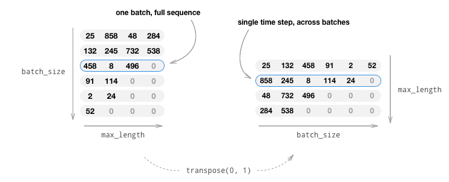
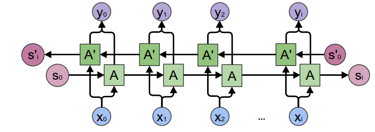
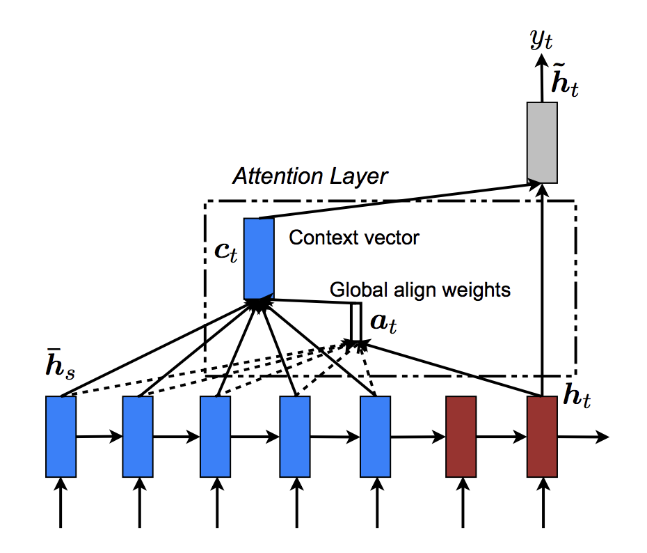

Note
Go to the end to download the full example code.
Chatbot Tutorial#
Created On: Oct 02, 2025 | Last Updated: Oct 02, 2025 | Last Verified: Nov 05, 2024
Author: Matthew Inkawhich
In this tutorial, we explore a fun and interesting use-case of recurrent sequence-to-sequence models. We will train a simple chatbot using movie scripts from the Cornell Movie-Dialogs Corpus.
Conversational models are a hot topic in artificial intelligence research. Chatbots can be found in a variety of settings, including customer service applications and online helpdesks. These bots are often powered by retrieval-based models, which output predefined responses to questions of certain forms. In a highly restricted domain like a company’s IT helpdesk, these models may be sufficient, however, they are not robust enough for more general use-cases. Teaching a machine to carry out a meaningful conversation with a human in multiple domains is a research question that is far from solved. Recently, the deep learning boom has allowed for powerful generative models like Google’s Neural Conversational Model, which marks a large step towards multi-domain generative conversational models. In this tutorial, we will implement this kind of model in PyTorch.
> hello?
Bot: hello .
> where am I?
Bot: you re in a hospital .
> who are you?
Bot: i m a lawyer .
> how are you doing?
Bot: i m fine .
> are you my friend?
Bot: no .
> you're under arrest
Bot: i m trying to help you !
> i'm just kidding
Bot: i m sorry .
> where are you from?
Bot: san francisco .
> it's time for me to leave
Bot: i know .
> goodbye
Bot: goodbye .
Tutorial Highlights
Handle loading and preprocessing of Cornell Movie-Dialogs Corpus dataset
Implement a sequence-to-sequence model with Luong attention mechanism(s)
Jointly train encoder and decoder models using mini-batches
Implement greedy-search decoding module
Interact with trained chatbot
Acknowledgments
This tutorial borrows code from the following sources:
Yuan-Kuei Wu’s pytorch-chatbot implementation: ywk991112/pytorch-chatbot
Sean Robertson’s practical-pytorch seq2seq-translation example: spro/practical-pytorch
FloydHub Cornell Movie Corpus preprocessing code: floydhub/textutil-preprocess-cornell-movie-corpus
Preparations#
To get started, download the Movie-Dialogs Corpus zip file.
# and put in a ``data/`` directory under the current directory.
#
# After that, let’s import some necessities.
#
import torch
from torch.jit import script, trace
import torch.nn as nn
from torch import optim
import torch.nn.functional as F
import csv
import random
import re
import os
import unicodedata
import codecs
from io import open
import itertools
import math
import json
# If the current `accelerator <https://pytorch.org/docs/stable/torch.html#accelerators>`__ is available,
# we will use it. Otherwise, we use the CPU.
device = torch.accelerator.current_accelerator().type if torch.accelerator.is_available() else "cpu"
print(f"Using {device} device")
Load & Preprocess Data#
The next step is to reformat our data file and load the data into structures that we can work with.
The Cornell Movie-Dialogs Corpus is a rich dataset of movie character dialog:
220,579 conversational exchanges between 10,292 pairs of movie characters
9,035 characters from 617 movies
304,713 total utterances
This dataset is large and diverse, and there is a great variation of language formality, time periods, sentiment, etc. Our hope is that this diversity makes our model robust to many forms of inputs and queries.
First, we’ll take a look at some lines of our datafile to see the original format.
corpus_name = "movie-corpus"
corpus = os.path.join("data", corpus_name)
def printLines(file, n=10):
with open(file, 'rb') as datafile:
lines = datafile.readlines()
for line in lines[:n]:
print(line)
printLines(os.path.join(corpus, "utterances.jsonl"))
Create formatted data file#
For convenience, we’ll create a nicely formatted data file in which each line contains a tab-separated query sentence and a response sentence pair.
The following functions facilitate the parsing of the raw
utterances.jsonl data file.
loadLinesAndConversationssplits each line of the file into a dictionary of lines with fields:lineID,characterID, and text and then groups them into conversations with fields:conversationID,movieID, and lines.extractSentencePairsextracts pairs of sentences from conversations
# Splits each line of the file to create lines and conversations
def loadLinesAndConversations(fileName):
lines = {}
conversations = {}
with open(fileName, 'r', encoding='iso-8859-1') as f:
for line in f:
lineJson = json.loads(line)
# Extract fields for line object
lineObj = {}
lineObj["lineID"] = lineJson["id"]
lineObj["characterID"] = lineJson["speaker"]
lineObj["text"] = lineJson["text"]
lines[lineObj['lineID']] = lineObj
# Extract fields for conversation object
if lineJson["conversation_id"] not in conversations:
convObj = {}
convObj["conversationID"] = lineJson["conversation_id"]
convObj["movieID"] = lineJson["meta"]["movie_id"]
convObj["lines"] = [lineObj]
else:
convObj = conversations[lineJson["conversation_id"]]
convObj["lines"].insert(0, lineObj)
conversations[convObj["conversationID"]] = convObj
return lines, conversations
# Extracts pairs of sentences from conversations
def extractSentencePairs(conversations):
qa_pairs = []
for conversation in conversations.values():
# Iterate over all the lines of the conversation
for i in range(len(conversation["lines"]) - 1): # We ignore the last line (no answer for it)
inputLine = conversation["lines"][i]["text"].strip()
targetLine = conversation["lines"][i+1]["text"].strip()
# Filter wrong samples (if one of the lists is empty)
if inputLine and targetLine:
qa_pairs.append([inputLine, targetLine])
return qa_pairs
Now we’ll call these functions and create the file. We’ll call it
formatted_movie_lines.txt.
# Define path to new file
datafile = os.path.join(corpus, "formatted_movie_lines.txt")
delimiter = '\t'
# Unescape the delimiter
delimiter = str(codecs.decode(delimiter, "unicode_escape"))
# Initialize lines dict and conversations dict
lines = {}
conversations = {}
# Load lines and conversations
print("\nProcessing corpus into lines and conversations...")
lines, conversations = loadLinesAndConversations(os.path.join(corpus, "utterances.jsonl"))
# Write new csv file
print("\nWriting newly formatted file...")
with open(datafile, 'w', encoding='utf-8') as outputfile:
writer = csv.writer(outputfile, delimiter=delimiter, lineterminator='\n')
for pair in extractSentencePairs(conversations):
writer.writerow(pair)
# Print a sample of lines
print("\nSample lines from file:")
printLines(datafile)
Load and trim data#
Our next order of business is to create a vocabulary and load query/response sentence pairs into memory.
Note that we are dealing with sequences of words, which do not have an implicit mapping to a discrete numerical space. Thus, we must create one by mapping each unique word that we encounter in our dataset to an index value.
For this we define a Voc class, which keeps a mapping from words to
indexes, a reverse mapping of indexes to words, a count of each word and
a total word count. The class provides methods for adding a word to the
vocabulary (addWord), adding all words in a sentence
(addSentence) and trimming infrequently seen words (trim). More
on trimming later.
# Default word tokens
PAD_token = 0 # Used for padding short sentences
SOS_token = 1 # Start-of-sentence token
EOS_token = 2 # End-of-sentence token
class Voc:
def __init__(self, name):
self.name = name
self.trimmed = False
self.word2index = {}
self.word2count = {}
self.index2word = {PAD_token: "PAD", SOS_token: "SOS", EOS_token: "EOS"}
self.num_words = 3 # Count SOS, EOS, PAD
def addSentence(self, sentence):
for word in sentence.split(' '):
self.addWord(word)
def addWord(self, word):
if word not in self.word2index:
self.word2index[word] = self.num_words
self.word2count[word] = 1
self.index2word[self.num_words] = word
self.num_words += 1
else:
self.word2count[word] += 1
# Remove words below a certain count threshold
def trim(self, min_count):
if self.trimmed:
return
self.trimmed = True
keep_words = []
for k, v in self.word2count.items():
if v >= min_count:
keep_words.append(k)
print('keep_words {} / {} = {:.4f}'.format(
len(keep_words), len(self.word2index), len(keep_words) / len(self.word2index)
))
# Reinitialize dictionaries
self.word2index = {}
self.word2count = {}
self.index2word = {PAD_token: "PAD", SOS_token: "SOS", EOS_token: "EOS"}
self.num_words = 3 # Count default tokens
for word in keep_words:
self.addWord(word)
Now we can assemble our vocabulary and query/response sentence pairs. Before we are ready to use this data, we must perform some preprocessing.
First, we must convert the Unicode strings to ASCII using
unicodeToAscii. Next, we should convert all letters to lowercase and
trim all non-letter characters except for basic punctuation
(normalizeString). Finally, to aid in training convergence, we will
filter out sentences with length greater than the MAX_LENGTH
threshold (filterPairs).
MAX_LENGTH = 10 # Maximum sentence length to consider
# Turn a Unicode string to plain ASCII, thanks to
# https://stackoverflow.com/a/518232/2809427
def unicodeToAscii(s):
return ''.join(
c for c in unicodedata.normalize('NFD', s)
if unicodedata.category(c) != 'Mn'
)
# Lowercase, trim, and remove non-letter characters
def normalizeString(s):
s = unicodeToAscii(s.lower().strip())
s = re.sub(r"([.!?])", r" \1", s)
s = re.sub(r"[^a-zA-Z.!?]+", r" ", s)
s = re.sub(r"\s+", r" ", s).strip()
return s
# Read query/response pairs and return a voc object
def readVocs(datafile, corpus_name):
print("Reading lines...")
# Read the file and split into lines
lines = open(datafile, encoding='utf-8').\
read().strip().split('\n')
# Split every line into pairs and normalize
pairs = [[normalizeString(s) for s in l.split('\t')] for l in lines]
voc = Voc(corpus_name)
return voc, pairs
# Returns True if both sentences in a pair 'p' are under the MAX_LENGTH threshold
def filterPair(p):
# Input sequences need to preserve the last word for EOS token
return len(p[0].split(' ')) < MAX_LENGTH and len(p[1].split(' ')) < MAX_LENGTH
# Filter pairs using the ``filterPair`` condition
def filterPairs(pairs):
return [pair for pair in pairs if filterPair(pair)]
# Using the functions defined above, return a populated voc object and pairs list
def loadPrepareData(corpus, corpus_name, datafile, save_dir):
print("Start preparing training data ...")
voc, pairs = readVocs(datafile, corpus_name)
print("Read {!s} sentence pairs".format(len(pairs)))
pairs = filterPairs(pairs)
print("Trimmed to {!s} sentence pairs".format(len(pairs)))
print("Counting words...")
for pair in pairs:
voc.addSentence(pair[0])
voc.addSentence(pair[1])
print("Counted words:", voc.num_words)
return voc, pairs
# Load/Assemble voc and pairs
save_dir = os.path.join("data", "save")
voc, pairs = loadPrepareData(corpus, corpus_name, datafile, save_dir)
# Print some pairs to validate
print("\npairs:")
for pair in pairs[:10]:
print(pair)
Another tactic that is beneficial to achieving faster convergence during training is trimming rarely used words out of our vocabulary. Decreasing the feature space will also soften the difficulty of the function that the model must learn to approximate. We will do this as a two-step process:
Trim words used under
MIN_COUNTthreshold using thevoc.trimfunction.Filter out pairs with trimmed words.
MIN_COUNT = 3 # Minimum word count threshold for trimming
def trimRareWords(voc, pairs, MIN_COUNT):
# Trim words used under the MIN_COUNT from the voc
voc.trim(MIN_COUNT)
# Filter out pairs with trimmed words
keep_pairs = []
for pair in pairs:
input_sentence = pair[0]
output_sentence = pair[1]
keep_input = True
keep_output = True
# Check input sentence
for word in input_sentence.split(' '):
if word not in voc.word2index:
keep_input = False
break
# Check output sentence
for word in output_sentence.split(' '):
if word not in voc.word2index:
keep_output = False
break
# Only keep pairs that do not contain trimmed word(s) in their input or output sentence
if keep_input and keep_output:
keep_pairs.append(pair)
print("Trimmed from {} pairs to {}, {:.4f} of total".format(len(pairs), len(keep_pairs), len(keep_pairs) / len(pairs)))
return keep_pairs
# Trim voc and pairs
pairs = trimRareWords(voc, pairs, MIN_COUNT)
Prepare Data for Models#
Although we have put a great deal of effort into preparing and massaging our data into a nice vocabulary object and list of sentence pairs, our models will ultimately expect numerical torch tensors as inputs. One way to prepare the processed data for the models can be found in the seq2seq translation tutorial. In that tutorial, we use a batch size of 1, meaning that all we have to do is convert the words in our sentence pairs to their corresponding indexes from the vocabulary and feed this to the models.
However, if you’re interested in speeding up training and/or would like to leverage GPU parallelization capabilities, you will need to train with mini-batches.
Using mini-batches also means that we must be mindful of the variation of sentence length in our batches. To accommodate sentences of different sizes in the same batch, we will make our batched input tensor of shape (max_length, batch_size), where sentences shorter than the max_length are zero padded after an EOS_token.
If we simply convert our English sentences to tensors by converting
words to their indexes(indexesFromSentence) and zero-pad, our
tensor would have shape (batch_size, max_length) and indexing the
first dimension would return a full sequence across all time-steps.
However, we need to be able to index our batch along time, and across
all sequences in the batch. Therefore, we transpose our input batch
shape to (max_length, batch_size), so that indexing across the first
dimension returns a time step across all sentences in the batch. We
handle this transpose implicitly in the zeroPadding function.

The inputVar function handles the process of converting sentences to
tensor, ultimately creating a correctly shaped zero-padded tensor. It
also returns a tensor of lengths for each of the sequences in the
batch which will be passed to our decoder later.
The outputVar function performs a similar function to inputVar,
but instead of returning a lengths tensor, it returns a binary mask
tensor and a maximum target sentence length. The binary mask tensor has
the same shape as the output target tensor, but every element that is a
PAD_token is 0 and all others are 1.
batch2TrainData simply takes a bunch of pairs and returns the input
and target tensors using the aforementioned functions.
def indexesFromSentence(voc, sentence):
return [voc.word2index[word] for word in sentence.split(' ')] + [EOS_token]
def zeroPadding(l, fillvalue=PAD_token):
return list(itertools.zip_longest(*l, fillvalue=fillvalue))
def binaryMatrix(l, value=PAD_token):
m = []
for i, seq in enumerate(l):
m.append([])
for token in seq:
if token == PAD_token:
m[i].append(0)
else:
m[i].append(1)
return m
# Returns padded input sequence tensor and lengths
def inputVar(l, voc):
indexes_batch = [indexesFromSentence(voc, sentence) for sentence in l]
lengths = torch.tensor([len(indexes) for indexes in indexes_batch])
padList = zeroPadding(indexes_batch)
padVar = torch.LongTensor(padList)
return padVar, lengths
# Returns padded target sequence tensor, padding mask, and max target length
def outputVar(l, voc):
indexes_batch = [indexesFromSentence(voc, sentence) for sentence in l]
max_target_len = max([len(indexes) for indexes in indexes_batch])
padList = zeroPadding(indexes_batch)
mask = binaryMatrix(padList)
mask = torch.BoolTensor(mask)
padVar = torch.LongTensor(padList)
return padVar, mask, max_target_len
# Returns all items for a given batch of pairs
def batch2TrainData(voc, pair_batch):
pair_batch.sort(key=lambda x: len(x[0].split(" ")), reverse=True)
input_batch, output_batch = [], []
for pair in pair_batch:
input_batch.append(pair[0])
output_batch.append(pair[1])
inp, lengths = inputVar(input_batch, voc)
output, mask, max_target_len = outputVar(output_batch, voc)
return inp, lengths, output, mask, max_target_len
# Example for validation
small_batch_size = 5
batches = batch2TrainData(voc, [random.choice(pairs) for _ in range(small_batch_size)])
input_variable, lengths, target_variable, mask, max_target_len = batches
print("input_variable:", input_variable)
print("lengths:", lengths)
print("target_variable:", target_variable)
print("mask:", mask)
print("max_target_len:", max_target_len)
Define Models#
Seq2Seq Model#
The brains of our chatbot is a sequence-to-sequence (seq2seq) model. The goal of a seq2seq model is to take a variable-length sequence as an input, and return a variable-length sequence as an output using a fixed-sized model.
Sutskever et al. discovered that by using two separate recurrent neural nets together, we can accomplish this task. One RNN acts as an encoder, which encodes a variable length input sequence to a fixed-length context vector. In theory, this context vector (the final hidden layer of the RNN) will contain semantic information about the query sentence that is input to the bot. The second RNN is a decoder, which takes an input word and the context vector, and returns a guess for the next word in the sequence and a hidden state to use in the next iteration.

Image source: https://jeddy92.github.io/JEddy92.github.io/ts_seq2seq_intro/
Encoder#
The encoder RNN iterates through the input sentence one token (e.g. word) at a time, at each time step outputting an “output” vector and a “hidden state” vector. The hidden state vector is then passed to the next time step, while the output vector is recorded. The encoder transforms the context it saw at each point in the sequence into a set of points in a high-dimensional space, which the decoder will use to generate a meaningful output for the given task.
At the heart of our encoder is a multi-layered Gated Recurrent Unit, invented by Cho et al. in 2014. We will use a bidirectional variant of the GRU, meaning that there are essentially two independent RNNs: one that is fed the input sequence in normal sequential order, and one that is fed the input sequence in reverse order. The outputs of each network are summed at each time step. Using a bidirectional GRU will give us the advantage of encoding both past and future contexts.
Bidirectional RNN:

Image source: https://colah.github.io/posts/2015-09-NN-Types-FP/
Note that an embedding layer is used to encode our word indices in
an arbitrarily sized feature space. For our models, this layer will map
each word to a feature space of size hidden_size. When trained, these
values should encode semantic similarity between similar meaning words.
Finally, if passing a padded batch of sequences to an RNN module, we
must pack and unpack padding around the RNN pass using
nn.utils.rnn.pack_padded_sequence and
nn.utils.rnn.pad_packed_sequence respectively.
Computation Graph:
Convert word indexes to embeddings.
Pack padded batch of sequences for RNN module.
Forward pass through GRU.
Unpack padding.
Sum bidirectional GRU outputs.
Return output and final hidden state.
Inputs:
input_seq: batch of input sentences; shape=(max_length, batch_size)input_lengths: list of sentence lengths corresponding to each sentence in the batch; shape=(batch_size)hidden: hidden state; shape=(n_layers x num_directions, batch_size, hidden_size)
Outputs:
outputs: output features from the last hidden layer of the GRU (sum of bidirectional outputs); shape=(max_length, batch_size, hidden_size)hidden: updated hidden state from GRU; shape=(n_layers x num_directions, batch_size, hidden_size)
class EncoderRNN(nn.Module):
def __init__(self, hidden_size, embedding, n_layers=1, dropout=0):
super(EncoderRNN, self).__init__()
self.n_layers = n_layers
self.hidden_size = hidden_size
self.embedding = embedding
# Initialize GRU; the input_size and hidden_size parameters are both set to 'hidden_size'
# because our input size is a word embedding with number of features == hidden_size
self.gru = nn.GRU(hidden_size, hidden_size, n_layers,
dropout=(0 if n_layers == 1 else dropout), bidirectional=True)
def forward(self, input_seq, input_lengths, hidden=None):
# Convert word indexes to embeddings
embedded = self.embedding(input_seq)
# Pack padded batch of sequences for RNN module
packed = nn.utils.rnn.pack_padded_sequence(embedded, input_lengths)
# Forward pass through GRU
outputs, hidden = self.gru(packed, hidden)
# Unpack padding
outputs, _ = nn.utils.rnn.pad_packed_sequence(outputs)
# Sum bidirectional GRU outputs
outputs = outputs[:, :, :self.hidden_size] + outputs[:, : ,self.hidden_size:]
# Return output and final hidden state
return outputs, hidden
Decoder#
The decoder RNN generates the response sentence in a token-by-token fashion. It uses the encoder’s context vectors, and internal hidden states to generate the next word in the sequence. It continues generating words until it outputs an EOS_token, representing the end of the sentence. A common problem with a vanilla seq2seq decoder is that if we rely solely on the context vector to encode the entire input sequence’s meaning, it is likely that we will have information loss. This is especially the case when dealing with long input sequences, greatly limiting the capability of our decoder.
To combat this, Bahdanau et al. created an “attention mechanism” that allows the decoder to pay attention to certain parts of the input sequence, rather than using the entire fixed context at every step.
At a high level, attention is calculated using the decoder’s current hidden state and the encoder’s outputs. The output attention weights have the same shape as the input sequence, allowing us to multiply them by the encoder outputs, giving us a weighted sum which indicates the parts of encoder output to pay attention to. Sean Robertson’s figure describes this very well:

Luong et al. improved upon Bahdanau et al.’s groundwork by creating “Global attention”. The key difference is that with “Global attention”, we consider all of the encoder’s hidden states, as opposed to Bahdanau et al.’s “Local attention”, which only considers the encoder’s hidden state from the current time step. Another difference is that with “Global attention”, we calculate attention weights, or energies, using the hidden state of the decoder from the current time step only. Bahdanau et al.’s attention calculation requires knowledge of the decoder’s state from the previous time step. Also, Luong et al. provides various methods to calculate the attention energies between the encoder output and decoder output which are called “score functions”:

where \(h_t\) = current target decoder state and \(\bar{h}_s\) = all encoder states.
Overall, the Global attention mechanism can be summarized by the
following figure. Note that we will implement the “Attention Layer” as a
separate nn.Module called Attn. The output of this module is a
softmax normalized weights tensor of shape (batch_size, 1,
max_length).

# Luong attention layer
class Attn(nn.Module):
def __init__(self, method, hidden_size):
super(Attn, self).__init__()
self.method = method
if self.method not in ['dot', 'general', 'concat']:
raise ValueError(self.method, "is not an appropriate attention method.")
self.hidden_size = hidden_size
if self.method == 'general':
self.attn = nn.Linear(self.hidden_size, hidden_size)
elif self.method == 'concat':
self.attn = nn.Linear(self.hidden_size * 2, hidden_size)
self.v = nn.Parameter(torch.FloatTensor(hidden_size))
def dot_score(self, hidden, encoder_output):
return torch.sum(hidden * encoder_output, dim=2)
def general_score(self, hidden, encoder_output):
energy = self.attn(encoder_output)
return torch.sum(hidden * energy, dim=2)
def concat_score(self, hidden, encoder_output):
energy = self.attn(torch.cat((hidden.expand(encoder_output.size(0), -1, -1), encoder_output), 2)).tanh()
return torch.sum(self.v * energy, dim=2)
def forward(self, hidden, encoder_outputs):
# Calculate the attention weights (energies) based on the given method
if self.method == 'general':
attn_energies = self.general_score(hidden, encoder_outputs)
elif self.method == 'concat':
attn_energies = self.concat_score(hidden, encoder_outputs)
elif self.method == 'dot':
attn_energies = self.dot_score(hidden, encoder_outputs)
# Transpose max_length and batch_size dimensions
attn_energies = attn_energies.t()
# Return the softmax normalized probability scores (with added dimension)
return F.softmax(attn_energies, dim=1).unsqueeze(1)
Now that we have defined our attention submodule, we can implement the actual decoder model. For the decoder, we will manually feed our batch one time step at a time. This means that our embedded word tensor and GRU output will both have shape (1, batch_size, hidden_size).
Computation Graph:
Get embedding of current input word.
Forward through unidirectional GRU.
Calculate attention weights from the current GRU output from (2).
Multiply attention weights to encoder outputs to get new “weighted sum” context vector.
Concatenate weighted context vector and GRU output using Luong eq. 5.
Predict next word using Luong eq. 6 (without softmax).
Return output and final hidden state.
Inputs:
input_step: one time step (one word) of input sequence batch; shape=(1, batch_size)last_hidden: final hidden layer of GRU; shape=(n_layers x num_directions, batch_size, hidden_size)encoder_outputs: encoder model’s output; shape=(max_length, batch_size, hidden_size)
Outputs:
output: softmax normalized tensor giving probabilities of each word being the correct next word in the decoded sequence; shape=(batch_size, voc.num_words)hidden: final hidden state of GRU; shape=(n_layers x num_directions, batch_size, hidden_size)
class LuongAttnDecoderRNN(nn.Module):
def __init__(self, attn_model, embedding, hidden_size, output_size, n_layers=1, dropout=0.1):
super(LuongAttnDecoderRNN, self).__init__()
# Keep for reference
self.attn_model = attn_model
self.hidden_size = hidden_size
self.output_size = output_size
self.n_layers = n_layers
self.dropout = dropout
# Define layers
self.embedding = embedding
self.embedding_dropout = nn.Dropout(dropout)
self.gru = nn.GRU(hidden_size, hidden_size, n_layers, dropout=(0 if n_layers == 1 else dropout))
self.concat = nn.Linear(hidden_size * 2, hidden_size)
self.out = nn.Linear(hidden_size, output_size)
self.attn = Attn(attn_model, hidden_size)
def forward(self, input_step, last_hidden, encoder_outputs):
# Note: we run this one step (word) at a time
# Get embedding of current input word
embedded = self.embedding(input_step)
embedded = self.embedding_dropout(embedded)
# Forward through unidirectional GRU
rnn_output, hidden = self.gru(embedded, last_hidden)
# Calculate attention weights from the current GRU output
attn_weights = self.attn(rnn_output, encoder_outputs)
# Multiply attention weights to encoder outputs to get new "weighted sum" context vector
context = attn_weights.bmm(encoder_outputs.transpose(0, 1))
# Concatenate weighted context vector and GRU output using Luong eq. 5
rnn_output = rnn_output.squeeze(0)
context = context.squeeze(1)
concat_input = torch.cat((rnn_output, context), 1)
concat_output = torch.tanh(self.concat(concat_input))
# Predict next word using Luong eq. 6
output = self.out(concat_output)
output = F.softmax(output, dim=1)
# Return output and final hidden state
return output, hidden
Define Training Procedure#
Masked loss#
Since we are dealing with batches of padded sequences, we cannot simply
consider all elements of the tensor when calculating loss. We define
maskNLLLoss to calculate our loss based on our decoder’s output
tensor, the target tensor, and a binary mask tensor describing the
padding of the target tensor. This loss function calculates the average
negative log likelihood of the elements that correspond to a 1 in the
mask tensor.
def maskNLLLoss(inp, target, mask):
nTotal = mask.sum()
crossEntropy = -torch.log(torch.gather(inp, 1, target.view(-1, 1)).squeeze(1))
loss = crossEntropy.masked_select(mask).mean()
loss = loss.to(device)
return loss, nTotal.item()
Single training iteration#
The train function contains the algorithm for a single training
iteration (a single batch of inputs).
We will use a couple of clever tricks to aid in convergence:
The first trick is using teacher forcing. This means that at some probability, set by
teacher_forcing_ratio, we use the current target word as the decoder’s next input rather than using the decoder’s current guess. This technique acts as training wheels for the decoder, aiding in more efficient training. However, teacher forcing can lead to model instability during inference, as the decoder may not have a sufficient chance to truly craft its own output sequences during training. Thus, we must be mindful of how we are setting theteacher_forcing_ratio, and not be fooled by fast convergence.The second trick that we implement is gradient clipping. This is a commonly used technique for countering the “exploding gradient” problem. In essence, by clipping or thresholding gradients to a maximum value, we prevent the gradients from growing exponentially and either overflow (NaN), or overshoot steep cliffs in the cost function.

Image source: Goodfellow et al. Deep Learning. 2016. https://www.deeplearningbook.org/
Sequence of Operations:
Forward pass entire input batch through encoder.
Initialize decoder inputs as SOS_token, and hidden state as the encoder’s final hidden state.
Forward input batch sequence through decoder one time step at a time.
If teacher forcing: set next decoder input as the current target; else: set next decoder input as current decoder output.
Calculate and accumulate loss.
Perform backpropagation.
Clip gradients.
Update encoder and decoder model parameters.
Note
PyTorch’s RNN modules (RNN, LSTM, GRU) can be used like any
other non-recurrent layers by simply passing them the entire input
sequence (or batch of sequences). We use the GRU layer like this in
the encoder. The reality is that under the hood, there is an
iterative process looping over each time step calculating hidden states.
Alternatively, you can run these modules one time-step at a time. In
this case, we manually loop over the sequences during the training
process like we must do for the decoder model. As long as you
maintain the correct conceptual model of these modules, implementing
sequential models can be very straightforward.
def train(input_variable, lengths, target_variable, mask, max_target_len, encoder, decoder, embedding,
encoder_optimizer, decoder_optimizer, batch_size, clip, max_length=MAX_LENGTH):
# Zero gradients
encoder_optimizer.zero_grad()
decoder_optimizer.zero_grad()
# Set device options
input_variable = input_variable.to(device)
target_variable = target_variable.to(device)
mask = mask.to(device)
# Lengths for RNN packing should always be on the CPU
lengths = lengths.to("cpu")
# Initialize variables
loss = 0
print_losses = []
n_totals = 0
# Forward pass through encoder
encoder_outputs, encoder_hidden = encoder(input_variable, lengths)
# Create initial decoder input (start with SOS tokens for each sentence)
decoder_input = torch.LongTensor([[SOS_token for _ in range(batch_size)]])
decoder_input = decoder_input.to(device)
# Set initial decoder hidden state to the encoder's final hidden state
decoder_hidden = encoder_hidden[:decoder.n_layers]
# Determine if we are using teacher forcing this iteration
use_teacher_forcing = True if random.random() < teacher_forcing_ratio else False
# Forward batch of sequences through decoder one time step at a time
if use_teacher_forcing:
for t in range(max_target_len):
decoder_output, decoder_hidden = decoder(
decoder_input, decoder_hidden, encoder_outputs
)
# Teacher forcing: next input is current target
decoder_input = target_variable[t].view(1, -1)
# Calculate and accumulate loss
mask_loss, nTotal = maskNLLLoss(decoder_output, target_variable[t], mask[t])
loss += mask_loss
print_losses.append(mask_loss.item() * nTotal)
n_totals += nTotal
else:
for t in range(max_target_len):
decoder_output, decoder_hidden = decoder(
decoder_input, decoder_hidden, encoder_outputs
)
# No teacher forcing: next input is decoder's own current output
_, topi = decoder_output.topk(1)
decoder_input = torch.LongTensor([[topi[i][0] for i in range(batch_size)]])
decoder_input = decoder_input.to(device)
# Calculate and accumulate loss
mask_loss, nTotal = maskNLLLoss(decoder_output, target_variable[t], mask[t])
loss += mask_loss
print_losses.append(mask_loss.item() * nTotal)
n_totals += nTotal
# Perform backpropagation
loss.backward()
# Clip gradients: gradients are modified in place
_ = nn.utils.clip_grad_norm_(encoder.parameters(), clip)
_ = nn.utils.clip_grad_norm_(decoder.parameters(), clip)
# Adjust model weights
encoder_optimizer.step()
decoder_optimizer.step()
return sum(print_losses) / n_totals
Training iterations#
It is finally time to tie the full training procedure together with the
data. The trainIters function is responsible for running
n_iterations of training given the passed models, optimizers, data,
etc. This function is quite self explanatory, as we have done the heavy
lifting with the train function.
One thing to note is that when we save our model, we save a tarball
containing the encoder and decoder state_dicts (parameters), the
optimizers’ state_dicts, the loss, the iteration, etc. Saving the model
in this way will give us the ultimate flexibility with the checkpoint.
After loading a checkpoint, we will be able to use the model parameters
to run inference, or we can continue training right where we left off.
def trainIters(model_name, voc, pairs, encoder, decoder, encoder_optimizer, decoder_optimizer, embedding, encoder_n_layers, decoder_n_layers, save_dir, n_iteration, batch_size, print_every, save_every, clip, corpus_name, loadFilename):
# Load batches for each iteration
training_batches = [batch2TrainData(voc, [random.choice(pairs) for _ in range(batch_size)])
for _ in range(n_iteration)]
# Initializations
print('Initializing ...')
start_iteration = 1
print_loss = 0
if loadFilename:
start_iteration = checkpoint['iteration'] + 1
# Training loop
print("Training...")
for iteration in range(start_iteration, n_iteration + 1):
training_batch = training_batches[iteration - 1]
# Extract fields from batch
input_variable, lengths, target_variable, mask, max_target_len = training_batch
# Run a training iteration with batch
loss = train(input_variable, lengths, target_variable, mask, max_target_len, encoder,
decoder, embedding, encoder_optimizer, decoder_optimizer, batch_size, clip)
print_loss += loss
# Print progress
if iteration % print_every == 0:
print_loss_avg = print_loss / print_every
print("Iteration: {}; Percent complete: {:.1f}%; Average loss: {:.4f}".format(iteration, iteration / n_iteration * 100, print_loss_avg))
print_loss = 0
# Save checkpoint
if (iteration % save_every == 0):
directory = os.path.join(save_dir, model_name, corpus_name, '{}-{}_{}'.format(encoder_n_layers, decoder_n_layers, hidden_size))
if not os.path.exists(directory):
os.makedirs(directory)
torch.save({
'iteration': iteration,
'en': encoder.state_dict(),
'de': decoder.state_dict(),
'en_opt': encoder_optimizer.state_dict(),
'de_opt': decoder_optimizer.state_dict(),
'loss': loss,
'voc_dict': voc.__dict__,
'embedding': embedding.state_dict()
}, os.path.join(directory, '{}_{}.tar'.format(iteration, 'checkpoint')))
Define Evaluation#
After training a model, we want to be able to talk to the bot ourselves. First, we must define how we want the model to decode the encoded input.
Greedy decoding#
Greedy decoding is the decoding method that we use during training when
we are NOT using teacher forcing. In other words, for each time
step, we simply choose the word from decoder_output with the highest
softmax value. This decoding method is optimal on a single time-step
level.
To facilitate the greedy decoding operation, we define a
GreedySearchDecoder class. When run, an object of this class takes
an input sequence (input_seq) of shape (input_seq length, 1), a
scalar input length (input_length) tensor, and a max_length to
bound the response sentence length. The input sentence is evaluated
using the following computational graph:
Computation Graph:
Forward input through encoder model.
Prepare encoder’s final hidden layer to be first hidden input to the decoder.
Initialize decoder’s first input as SOS_token.
Initialize tensors to append decoded words to.
- Iteratively decode one word token at a time:
Forward pass through decoder.
Obtain most likely word token and its softmax score.
Record token and score.
Prepare current token to be next decoder input.
Return collections of word tokens and scores.
class GreedySearchDecoder(nn.Module):
def __init__(self, encoder, decoder):
super(GreedySearchDecoder, self).__init__()
self.encoder = encoder
self.decoder = decoder
def forward(self, input_seq, input_length, max_length):
# Forward input through encoder model
encoder_outputs, encoder_hidden = self.encoder(input_seq, input_length)
# Prepare encoder's final hidden layer to be first hidden input to the decoder
decoder_hidden = encoder_hidden[:self.decoder.n_layers]
# Initialize decoder input with SOS_token
decoder_input = torch.ones(1, 1, device=device, dtype=torch.long) * SOS_token
# Initialize tensors to append decoded words to
all_tokens = torch.zeros([0], device=device, dtype=torch.long)
all_scores = torch.zeros([0], device=device)
# Iteratively decode one word token at a time
for _ in range(max_length):
# Forward pass through decoder
decoder_output, decoder_hidden = self.decoder(decoder_input, decoder_hidden, encoder_outputs)
# Obtain most likely word token and its softmax score
decoder_scores, decoder_input = torch.max(decoder_output, dim=1)
# Record token and score
all_tokens = torch.cat((all_tokens, decoder_input), dim=0)
all_scores = torch.cat((all_scores, decoder_scores), dim=0)
# Prepare current token to be next decoder input (add a dimension)
decoder_input = torch.unsqueeze(decoder_input, 0)
# Return collections of word tokens and scores
return all_tokens, all_scores
Evaluate my text#
Now that we have our decoding method defined, we can write functions for
evaluating a string input sentence. The evaluate function manages
the low-level process of handling the input sentence. We first format
the sentence as an input batch of word indexes with batch_size==1. We
do this by converting the words of the sentence to their corresponding
indexes, and transposing the dimensions to prepare the tensor for our
models. We also create a lengths tensor which contains the length of
our input sentence. In this case, lengths is scalar because we are
only evaluating one sentence at a time (batch_size==1). Next, we obtain
the decoded response sentence tensor using our GreedySearchDecoder
object (searcher). Finally, we convert the response’s indexes to
words and return the list of decoded words.
evaluateInput acts as the user interface for our chatbot. When
called, an input text field will spawn in which we can enter our query
sentence. After typing our input sentence and pressing Enter, our text
is normalized in the same way as our training data, and is ultimately
fed to the evaluate function to obtain a decoded output sentence. We
loop this process, so we can keep chatting with our bot until we enter
either “q” or “quit”.
Finally, if a sentence is entered that contains a word that is not in the vocabulary, we handle this gracefully by printing an error message and prompting the user to enter another sentence.
def evaluate(encoder, decoder, searcher, voc, sentence, max_length=MAX_LENGTH):
### Format input sentence as a batch
# words -> indexes
indexes_batch = [indexesFromSentence(voc, sentence)]
# Create lengths tensor
lengths = torch.tensor([len(indexes) for indexes in indexes_batch])
# Transpose dimensions of batch to match models' expectations
input_batch = torch.LongTensor(indexes_batch).transpose(0, 1)
# Use appropriate device
input_batch = input_batch.to(device)
lengths = lengths.to("cpu")
# Decode sentence with searcher
tokens, scores = searcher(input_batch, lengths, max_length)
# indexes -> words
decoded_words = [voc.index2word[token.item()] for token in tokens]
return decoded_words
def evaluateInput(encoder, decoder, searcher, voc):
input_sentence = ''
while(1):
try:
# Get input sentence
input_sentence = input('> ')
# Check if it is quit case
if input_sentence == 'q' or input_sentence == 'quit': break
# Normalize sentence
input_sentence = normalizeString(input_sentence)
# Evaluate sentence
output_words = evaluate(encoder, decoder, searcher, voc, input_sentence)
# Format and print response sentence
output_words[:] = [x for x in output_words if not (x == 'EOS' or x == 'PAD')]
print('Bot:', ' '.join(output_words))
except KeyError:
print("Error: Encountered unknown word.")
Run Model#
Finally, it is time to run our model!
Regardless of whether we want to train or test the chatbot model, we must initialize the individual encoder and decoder models. In the following block, we set our desired configurations, choose to start from scratch or set a checkpoint to load from, and build and initialize the models. Feel free to play with different model configurations to optimize performance.
# Configure models
model_name = 'cb_model'
attn_model = 'dot'
#``attn_model = 'general'``
#``attn_model = 'concat'``
hidden_size = 500
encoder_n_layers = 2
decoder_n_layers = 2
dropout = 0.1
batch_size = 64
# Set checkpoint to load from; set to None if starting from scratch
loadFilename = None
checkpoint_iter = 4000
Sample code to load from a checkpoint:
loadFilename = os.path.join(save_dir, model_name, corpus_name,
'{}-{}_{}'.format(encoder_n_layers, decoder_n_layers, hidden_size),
'{}_checkpoint.tar'.format(checkpoint_iter))
# Load model if a ``loadFilename`` is provided
if loadFilename:
# If loading on same machine the model was trained on
checkpoint = torch.load(loadFilename)
# If loading a model trained on GPU to CPU
#checkpoint = torch.load(loadFilename, map_location=torch.device('cpu'))
encoder_sd = checkpoint['en']
decoder_sd = checkpoint['de']
encoder_optimizer_sd = checkpoint['en_opt']
decoder_optimizer_sd = checkpoint['de_opt']
embedding_sd = checkpoint['embedding']
voc.__dict__ = checkpoint['voc_dict']
print('Building encoder and decoder ...')
# Initialize word embeddings
embedding = nn.Embedding(voc.num_words, hidden_size)
if loadFilename:
embedding.load_state_dict(embedding_sd)
# Initialize encoder & decoder models
encoder = EncoderRNN(hidden_size, embedding, encoder_n_layers, dropout)
decoder = LuongAttnDecoderRNN(attn_model, embedding, hidden_size, voc.num_words, decoder_n_layers, dropout)
if loadFilename:
encoder.load_state_dict(encoder_sd)
decoder.load_state_dict(decoder_sd)
# Use appropriate device
encoder = encoder.to(device)
decoder = decoder.to(device)
print('Models built and ready to go!')
Run Training#
Run the following block if you want to train the model.
First we set training parameters, then we initialize our optimizers, and
finally we call the trainIters function to run our training
iterations.
# Configure training/optimization
clip = 50.0
teacher_forcing_ratio = 1.0
learning_rate = 0.0001
decoder_learning_ratio = 5.0
n_iteration = 4000
print_every = 1
save_every = 500
# Ensure dropout layers are in train mode
encoder.train()
decoder.train()
# Initialize optimizers
print('Building optimizers ...')
encoder_optimizer = optim.Adam(encoder.parameters(), lr=learning_rate)
decoder_optimizer = optim.Adam(decoder.parameters(), lr=learning_rate * decoder_learning_ratio)
if loadFilename:
encoder_optimizer.load_state_dict(encoder_optimizer_sd)
decoder_optimizer.load_state_dict(decoder_optimizer_sd)
# If you have an accelerator, configure it to call
for state in encoder_optimizer.state.values():
for k, v in state.items():
if isinstance(v, torch.Tensor):
state[k] = v.to(device)
for state in decoder_optimizer.state.values():
for k, v in state.items():
if isinstance(v, torch.Tensor):
state[k] = v.to(device)
# Run training iterations
print("Starting Training!")
trainIters(model_name, voc, pairs, encoder, decoder, encoder_optimizer, decoder_optimizer,
embedding, encoder_n_layers, decoder_n_layers, save_dir, n_iteration, batch_size,
print_every, save_every, clip, corpus_name, loadFilename)
Run Evaluation#
To chat with your model, run the following block.
# Set dropout layers to ``eval`` mode
encoder.eval()
decoder.eval()
# Initialize search module
searcher = GreedySearchDecoder(encoder, decoder)
# Begin chatting (uncomment and run the following line to begin)
# evaluateInput(encoder, decoder, searcher, voc)
Conclusion#
That’s all for this one, folks. Congratulations, you now know the fundamentals to building a generative chatbot model! If you’re interested, you can try tailoring the chatbot’s behavior by tweaking the model and training parameters and customizing the data that you train the model on.
Check out the other tutorials for more cool deep learning applications in PyTorch!

{kind=link}
{kind=link}